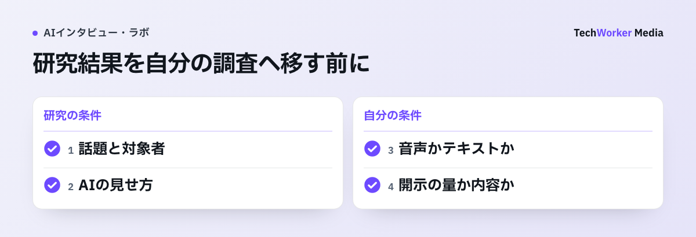

研究原文：Lucasほか「It’s only a computer」（Computers in Human Behavior、2014年、2026年10月6日確認）
この実験は、相手が人に遠隔操作されていると思う条件と、自動化された仮想人間だと思う条件を比べました。センシティブな情報の開示に関する差は示しましたが、「AIなら誰でも必ず本音を話す」という一般則ではありません。聞き手の説明、評価への利用、質問テーマを切り分けて読みます。
出典：Computers in Human Behavior掲載論文。本文は要旨と公開情報から研究設計と結果を要約し、論文図は転載していません。
本記事は、公開研究の整理を目的とした研究ノートです。開示が増えた研究と、同じ差を確認できなかった研究を併記し、査読誌掲載かワーキングペーパーかも本文に明記します。引用した論文は参考文献から原典を確認できます。
AI相手の開示が増えた実験条件
2014年の実験では、同じ仮想面接官でも、自動化されていると説明された群で自己開示への恐れや印象管理が低くなりました。
ただし、示されたのは「心理的な壁が下がる」ことまでです。
出発点としてよく引かれるのは、南カリフォルニア大学のGale Lucasらによる2014年の実験です。研究設計と結果は、Lucas et al. 2014, Computers in Human Behaviorで確認できます。
「信念」だけを操作した実験
参加者は、バーチャルヒューマン（画面上の面接官）との健康面接に臨みます。システムは条件間で共通です。
一方の群には「これは完全に自動のAIです」と伝え、もう一方の群には「人間が操作しています」と伝えます。動いているものは同じで、変えたのは参加者の信念だけです。
結果、AIだと信じた群は、人間が操作していると信じた群に比べ、自己開示への恐れが低くなりました。印象管理（自分をよく見せようとする振る舞い）も弱くなりました。悲しみの表出は強くなり、第三者評価でも開示への意欲が高いと判定されました。
システムを共通にして説明だけを変えた実験なので、群間差は、聞き手に人が関与しているという参加者の認識の違いと結びつけて解釈されています。
公式評価より多くの症状を報告した軍人研究
同じ研究グループは2017年に、切実な文脈でも検証しています（Lucas et al. 2017, Frontiers in Robotics and AI）。
対象は帰還した米軍人です。帰還時の公式の健康評価では、キャリアへの影響を懸念して、メンタルヘルスの症状が過少報告されがちだと知られています。
Study 1では、帰還軍人がバーチャルヒューマンの面接官へ報告したPTSD症状が、公式の健康評価や匿名調査より有意に多い結果でした。より大きいStudy 2も同方向でしたが、統計的な有意水準には届かなかったため、Study 1と分けて読みます。
2つの研究が示すのは、「AIだと人は饒舌になる」という一般則ではありません。健康面接とPTSD症状報告という研究条件で、聞き手に人が関与するという認識や公式評価との比較が、開示への恐れ・印象管理・症状報告と関係しました。
回答の量と質を分けて検証する
GPT-4ベースのチャット調査で95%超が全質問に回答した報告があります。研究条件と公開版を区別して読みます。
前節の研究は、バーチャルヒューマンを使った実験室・臨床文脈のものでした。大規模言語モデル（LLM）ベースのAIインタビューは、経済学分野の2つの研究で見ます。
395件のAIチャットインタビュー（Chopra & Haaland）
ChopraとHaalandは、株式市場へ参加していない米国のオンライン標本を対象にしました。GPT-4ベースのAIインタビュアーで395件のチャットインタビューを実施しています（Chopra & Haaland 2023, CEBI Working Paper）。
- 95%超の回答者が、全質問に自発的に回答しました（平均約30分）。
- 82.0%が、体験を肯定的に評価しました。
- 53.2%が、人間のインタビュアーよりAIを選好しました。
この結果から確認できるのは、研究条件下での質問完了率と利用体験です。回答内容の正確さや深さは、この数値だけでは判断できません。
ただし、これはCEBI/CESifoのワーキングペーパーで、査読誌には掲載されていません。数値を引くときは、この位置づけごと引くのが誠実な扱い方です。
公開された基盤（Geiecke & Jaravel）
別の公開研究に、GeieckeとJaravelの「Conversations at Scale」（CEPR DP19705）があります。2026年10月3日に確認したCEPRのページは、2024年11月22日公開のDiscussion Paper（研究討議論文）と表示しています。本記事ではこの公開版を参照し、査読誌への採択は断定しません。
AI主導インタビューのオープンソース基盤を公開し、4つの領域で品質を検証した研究です。AI主導の調査基盤と、その研究条件での検証を示しています。自社の日本語調査の品質保証とは分けて読みます。
逆方向の研究を含めて読む
会話の文脈適合性が高い条件で社会的に望ましい回答が増えた研究や、人とチャットボットで自己申告の開示親密度に差がなかった報告があります。
研究ごとに対象、質問、比較条件、測定尺度が異なります。一つの研究結果を、AIとの会話全般へ広げずに読みます。
会話の文脈適合性が高いと「取り繕い」が増える場合がある
Schuetzlerらは、会話エージェントの設計とセンシティブな質問への回答の関係を検証しました。詳細はSchuetzler et al. 2018, Decision Support Systemsで確認できます。
会話の文脈適合性が高い条件では、回答が社会的に望ましい方向へ寄りました。一方、身体表現の効果は小さく、人間らしさ全般が原因だとは言えません。
Lucasらの結果と合わせると、聞き手をどう説明し、会話をどう設計するかが回答へ影響する可能性があります。ただし、二つの研究は対象と操作条件が異なるため、同じ機構だとは断定しません。
ここで確認できるのは、会話の文脈適合性と回答傾向の関係です。AIの自己開示方法そのものを操作した実験ではないため、製品上の開示方針の効果とは分けます。
開示親密度には差がなかったという報告
Croesらは286名を対象に、人間相手とチャットボット相手への「告白」を比較しました。詳細はCroes et al. 2024, Interacting with Computersで確認できます。
自己申告の開示親密度には人間相手とチャットボット相手で差がありませんでした。一方、「判断される恐れ」はチャットボット相手で低く、「信頼」は人間相手で高い結果でした。
この研究から、深い開示が常に人間へ向かうとは言えません。本記事では、関係構築そのものが必要なテーマでは人を候補に残す、という運用判断へつなげます。
テキストの好結果を、音声に外挿しない
モダリティ（テキストか音声か）の問題もあります。Tirumalaらは音声型AIインタビュアーを検証しました。文字起こしの誤りや深掘りの質のムラといった技術的限界を指摘しています（Tirumala et al. 2025, arXiv、プレプリント）。
前節のChopra & Haalandの好結果は、チャット（テキスト）形式で得られたものです。テキストでの実証を音声にそのまま外挿するのは、現時点では証拠の先回りになります。
AIであることを明示する方針
CoeSignal（株式会社TechWorkerが提供するAIインタビュープラットフォーム）は、回答者へAIが聞き手であることを明示する方針です。これは本記事で採る倫理上・調査設計上の判断であり、Schuetzlerらの研究だけから特定製品の効果を証明するものではありません。
研究条件を実務の設計へ移す
研究で測った尺度を確認し、自社の話題と回答方式では同じ差が出るかを試験実査で比べます。

研究で発言が増えたことは、その発言が事実である証明にはなりません。自分の調査へ移す前に、対象者、話題、AIの見せ方、音声かテキストかを並べます。健康面接の結果を、製品の購入理由や日本語の音声回答へ、そのまま効能として使わないでください。
2014年と2017年の研究条件では、判断される恐れや印象管理の低下、症状報告の増加が観察されました。別の対象、話題、回答方式へ移すときは、同じ心理機序が働くと仮定せず、比較実査で確かめます。
- 効果を前提にせず比べます。不満、解約理由、お金など、引用研究で直接検証していない話題へ効能を広げません。健康に関する結果も、Lucasらが調べた健康面接や症状報告の条件に限って読みます。同じ募集条件と質問を使い、人とAIで回答拒否、途中離脱、具体性、不要な個人情報の開示を比べます。
- 研究の尺度と設計方針を分けます。Schuetzlerらが検証したのは、会話の文脈適合性と社会的に望ましい回答の関係です。身体表現の効果は小さく、AIの自己開示効果を測った研究ではありません。回答者には、効果を高める手段としてではなく、説明と同意の方針に沿ってAIが聞き手だと明示します。
- モダリティの限界を織り込みます。音声で実施するなら、文字起こしや深掘りの質のムラを前提にして、品質検査や人の確認で補う運用をセットにします。
研究の誤読を避ける4つの条件
効果を言い切る、切り捨てる、位置づけを落とす、音声へ外挿するの4つが典型的な失敗です。
- 「AIなら本音が聞ける」と言い切る。証拠はこの売り文句に味方しません。
- 「AI相手の回答は信用できない」と一括りにする。引用研究だけでは、回答内容の正確さまで判断できません。
- ワーキングペーパーの数字を、位置づけを落として引く。査読誌掲載かどうかまで含めて引用します。
- テキストの好結果を、音声の効能として語る。音声は別の検証が要ります。
研究が直接支えるのは、それぞれの対象・質問・比較条件で観察された差までです。実案件では効能を仮定せず、同じ募集条件と質問による試験実査で差を確認します。
研究結果を移す前に照合する4項目
話題、聞き手の説明、測定した開示、回答方式を、引用研究と自分の調査で照合します。
| 観点 | 引用研究で確認した条件 | 実案件で確認すること |
|---|---|---|
| 話題 | 判断される恐れが強いセンシティブな話題。健康・症状報告など（Lucas et al. 2014・2017） | 話題や利用目的が研究条件と異なる場合は、同じ効果を外挿しない |
| 聞き手の説明 | Lucas et al. 2014は、自動化された仮想人間か、人が遠隔操作する仮想人間かという信念を比較した | 説明と同意の方針に沿って、AIが聞き手だと明示する。開示量を増やす効能とは扱わない |
| 測定した開示 | Lucas et al. 2014は開示への恐れ・印象管理・第三者評価、Croes et al. 2024は自己申告の開示親密度・判断される恐れ・信頼を測定した | 自社調査で「本音」や「質」を何の指標で判定するかを先に決める |
| モダリティ | Lucasらは画面上の仮想面接官、Chopra & Haalandはテキスト・チャットを用いた | 音声は文字起こし誤り・深掘りのムラ等の限界があり、テキストの結果を外挿できない（Tirumala et al. 2025） |
表：引用研究の条件と、実案件へ移す前に確認する項目（本記事で確認した原典に基づく）。
よくある質問
なりません。実験的に示されているのは、相手をAIだと信じると自己開示への恐れや印象管理が下がる、という「心理的なコストの低下」です（Lucas et al. 2014）。一方、Croes et al. 2024では、人とチャットボットで自己申告の開示親密度に差がありませんでした。自社の話題・対象者・回答方式でも同じ結果になるとは限らないため、小規模な比較実査で確かめます。
消えません。Schuetzlerらの実験では、会話の文脈適合性が高い条件で、回答が社会的に望ましい方向へ寄りました。身体表現の効果は小さいため、人間らしさ全般の効果とは扱いません（Schuetzler et al. 2018）。この研究が直接示したのは会話の文脈適合性との関係です。AIであることの明示は倫理と同意の方針として行い、開示量を増やす効能とは扱いません。
あります。GPT-4ベースのAIインタビュアーによる395件のチャットインタビューでは、95%超が全質問に自発的に回答しました（平均約30分）。82.0%が体験を肯定的に評価し、53.2%が人間よりAIのインタビュアーを選好しました（Chopra & Haaland 2023）。ただしこれは査読誌未掲載のワーキングペーパーで、この数値だけでは回答内容の正確さを証明しません。Geiecke & Jaravelの研究も公開されています。確認したCEPR版はDiscussion Paperと表示されており、本記事では採択状況を断定しません。AI主導インタビューの基盤を公開し、4領域で品質を検証しました。
そのまま期待するのは早計です。Chopra & Haalandの完了率・利用体験はテキスト形式で得られた結果です。音声型AIインタビュアーには、文字起こしの誤りや深掘りの質のムラといった技術的限界が指摘されています（Tirumala et al. 2025）。テキストでの結果を音声にそのまま外挿しないことが推奨されます。音声で実施する場合は、運用と品質検査で補う設計が前提です。
試験実査で比較する項目
「AIなら本音が出る」を前提にせず、同じ募集条件と質問で小規模に比べます。記録するのは回答文字数だけではありません。
- 回答拒否、途中離脱、質問の飛ばし方。
- 具体的な出来事と制約が含まれるか。
- 不要な個人情報まで開示していないか。
- 人とAIで結論が変わる項目があるか。
差が出た項目だけ、話題、AIの見せ方、音声か文字かを分けて再検証します。一度の試験で「本音」を測れたとは報告しません。
参考文献
本文で引用した研究の原典は、次のとおりです（本文での登場順）。
- Lucas et al. 2014（Lucas, G. M., Gratch, J., King, A., & Morency, L.-P. It's only a computer: Virtual humans increase willingness to disclose. Computers in Human Behavior, 37, 94–100.）論文ページ（ScienceDirect）
- Lucas et al. 2017（Lucas, G. M., ほか. Reporting mental health symptoms: Breaking down barriers to care with virtual human interviewers. Frontiers in Robotics and AI, 4:51.）論文ページ（Frontiers）
- Chopra & Haaland 2023（Chopra, F., & Haaland, I. Conducting qualitative interviews with AI. CEBI Working Paper 06/23.）※査読誌未掲載のワーキングペーパー。PDF（コペンハーゲン大学CEBI）
- Geiecke & Jaravel（Geiecke, F., & Jaravel, X. Conversations at Scale. CEPR Discussion Paper DP19705）論文ページ（CEPR）
- Schuetzler et al. 2018（Schuetzler, R. M., ほか. Decision Support Systems, 114.）論文ページ（ScienceDirect）
- Croes et al. 2024（Croes, E. A. J., ほか. Interacting with Computers, 36(5), 279–.）論文ページ（Oxford Academic）
- Tirumala et al. 2025（Tirumala, ほか. arXiv:2509.01814. プレプリント）論文ページ（arXiv）